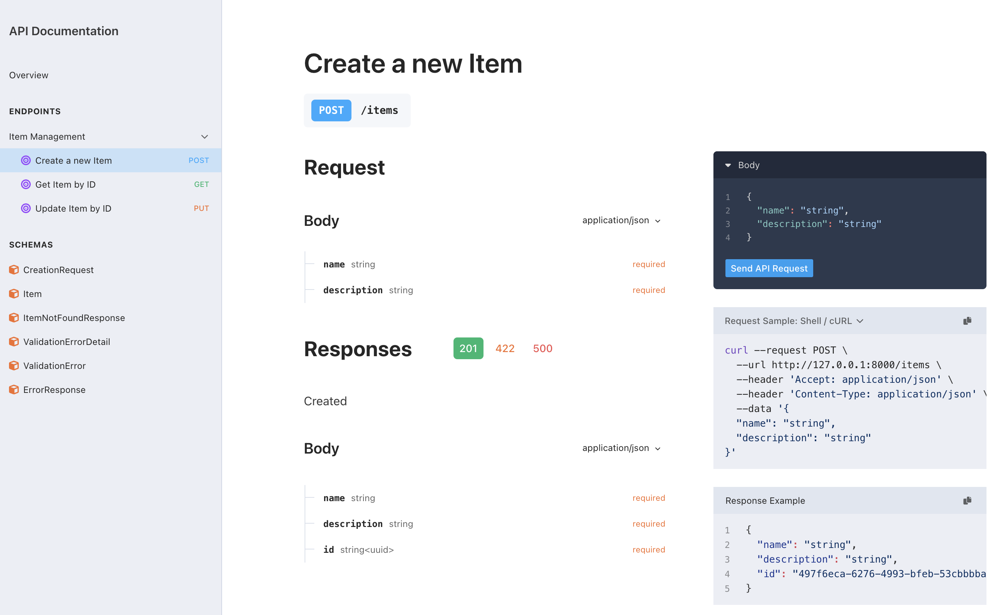

pydantic-tornado¶


Another attempt to bring first-class Pydantic support to Tornado applications
This isn't my first attempt to do this. I've tried a few times before but this one feels like it might be the one that sticks. This is the first time that I took at decorator-based approach to the problem. Previous attempts were always class-based, and it never worked out. Here is an example of what this looks like:
import asyncio
import contextlib
import logging
import typing
import uuid
import pydantic
import tornado.web
from pydantictornado import api, handlers, openapi
class Application(handlers.OpenAPIApplication, tornado.web.Application):
def __init__(self, **settings: object) -> None:
super().__init__(
[
tornado.web.url('/docs', handlers.OpenAPIDocHandler,
{'spec_handler_name': 'openapi_spec'}),
tornado.web.url('/openapi.json', handlers.OpenAPISpecHandler,
name='openapi_spec'),
tornado.web.url(
'/items', CollectionHandler, name='create_item'
),
tornado.web.url(
'/items/(?P<item_id>.+)', ItemHandler, name='item_handler'
),
],
**settings,
)
self.db: dict[uuid.UUID, Item] = {}
# Register error models and global errors (1)
self.register_error_model(404, ItemNotFoundResponse)
self.register_error_model(
422, openapi.ValidationError, description='Invalid body'
)
self.add_global_error(
500, ErrorResponse, description='Internal Server Error'
)
# Categorize operations in OpenAPI specification (2)
item_management = self.openapi_doc.add_tag(
'Item Management', 'Operations for managing items'
)
self.tag_operation('create_item', 'POST', item_management)
self.tag_operation('item_handler', 'GET', item_management)
self.tag_operation('item_handler', 'PUT', item_management)
def get_item(self, item_id: uuid.UUID) -> 'Item':
"""Retrieve an item from the database or fail."""
try:
return self.db[item_id]
except KeyError:
raise api.wrap_error(404, ItemNotFoundResponse()) from None # (3)!
class ErrorResponse(pydantic.BaseModel):
code: int
message: str
class ItemNotFoundResponse(ErrorResponse):
code: int = 404
message: str = 'Item Not Found'
class CreationRequest(pydantic.BaseModel):
name: str
description: str
class Item(CreationRequest, pydantic.BaseModel):
id: uuid.UUID
class RequestHandler(handlers.PydanticErrorHandler, tornado.web.RequestHandler): # (8)!
"""Common behavior for all request handlers."""
application: Application
class CollectionHandler(RequestHandler):
@api.expose_operation(summary='Create a new Item', default_status=201) # (4)!
@api.add_error_response(422) # (5)!
@api.add_response_header('location', for_status=201)
async def post(
self, *, body: typing.Annotated[CreationRequest, api.Body] # (6)!
) -> Item:
new_item = Item(id=uuid.uuid4(), **body.model_dump(mode='python'))
self.application.db[new_item.id] = new_item
self.set_header('location', self.reverse_url('item_handler', new_item.id))
return new_item # (7)!
class ItemHandler(RequestHandler):
@api.expose_operation(summary='Get Item by ID')
@api.add_error_response(404, description='Item Not Found')
async def get(self, item_id: str) -> Item:
return self.application.get_item(uuid.UUID(item_id))
@api.expose_operation(summary='Update Item by ID')
@api.add_error_response(404, description='Item Not Found')
@api.add_error_response(422)
async def put(
self, item_id: str, *, body: typing.Annotated[Item, api.Body]
) -> Item:
old_item = self.application.get_item(uuid.UUID(item_id))
new_item = Item(id=old_item.id, **body.model_dump(mode='python'))
if new_item.id != old_item.id:
del self.application.db[old_item.id]
self.application.db[new_item.id] = new_item
return new_item
async def main() -> None:
logging.basicConfig(
level=logging.INFO, format='%(levelname)-15s %(name)s: %(message)s'
)
logger = logging.getLogger(__name__)
app = Application(autoreload=True, debug=True, serve_traceback=False)
app.listen(8000)
logger.info('Listening on http://localhost:8000/')
with contextlib.suppress(asyncio.CancelledError):
await asyncio.Event().wait()
if __name__ == '__main__':
asyncio.run(main())
- This is where you configure the models that will be used to represent errors in the API. You can also register error
models using the
modelkeyword parameter to api.add_error_response. The register_error_model method is more convenient when you have multiple endpoints that use the same error model. - It is useful to categorize operations into OpenAPI tags. This makes it easier to navigate the documentation. You
create the OpenAPI tag by calling add_tag on the
openapi_docattribute of the application. Then the tag_operation method is used to associate an operation with a tag. - This is an example of how to return a model-based error. This isn't my favorite part of the API, but it is required since pydantic.BaseModel cannot be combined with Exception in a class MRO :frown:
- Expose this method as an OpenAPI operation. The
summaryanddefault_statusparameters are optional. I recommend including a summary for all operations. Thedefault_statusis used when the operation returns a successful response other than200 OK. If you include adefault_status, the library sets the response status for you. You can also specify theoperation_idhere if you want a specific value in the OpenAPI specification. - Advertise that this method may return a 422. The description and response schema are configured in the Application initializer with the register_error_model method. You can pass keyword parameters to customize this behavior.
- This is an example of how to use the
api.Bodytype hint to indicate that thebodyparameter should be deserialized from the request body. The library takes care of deserializing the incoming JSON body to the Pydantic model. If it fails, then a library-provided response body is returned with a 422 response. The name of the parameter can be whatever you want, but it must include api.Body as an annotation. - The return value of this method is serialized to JSON and returned to the client. The status code is set to 201 Created
because of the
default_statusparameter in the api.expose_operation decorator. - This is a base class that combines the functionality of the tornado.web.RequestHandler and
handlers.PydanticErrorHandler classes. The
PydanticErrorHandlerclass is used to catch and serialize exceptions that are raised during request processing. This is necessary because the library cannot raise Pydantic models as exceptions. TheRequestHandlerclass is used for access to the standard tornado methods.
I know that there is a lot there for a "simple" example, but let's look at how much this differs from a normal Tornado
application. First, look at the post method of the CollectionHandler. Tornado request handling methods typically read
request bodies from self.request.body and write responses with self.write. This method doesn't do that. Instead, it
receives the request body as a parameter and returns the response body. The library takes care of the serialization
details for you and does so in a type safe manner. The api.expose_operation decorator
is where this magic happens. It examines the method signature to determine how to handle the request and response bodies.
If a parameter is annotated with api.Body, then the request body is read, deserialized, and
passed to the method. Additional method parameters are coerced from strings to the declared types as well. If the return type
is a Pydantic model, then the response is serialized and returned to the client.
Exception handling is another area where this library differs from typical Tornado applications. In the get_item method,
the ItemNotFoundResponse is raised when the item is not found. The api.wrap_error function
returns a wrapper exception that allows you to return a Pydantic model as the response body by raising an exception. The
wrapper is necessary because Pydantic models cannot subclass Exception and be used in a raise statement. The wrap_error
function returns a subclass of web.HTTPError that the pydantictornado.handlers.PydanticErrorHandler
class knows how to serialize so you need to include that class in the MRO of your request handler when you use this feature.
The api.add_error_response decorator is used to associate the model in the OpenAPI
specification. It is not responsible for transforming the exception into a response body. Using a base class for request
handlers that pulls together anything else that you need in every request handler is a pretty common pattern in Tornado
applications so it should be as easy as adding handlers.PydanticErrorHandler to your base class.
Now let's look at what the OpenAPI documentation looks like. The following screenshot is for the post method that we
discussed above.

The request body schema is generated from the CreationRequest model. Similarly, the response body schema is generated from
the Item model. The custom ItemNotFoundResponse model is used to describe the 404 response. The schema for
pydantictornado.openapi.ValidationError is used to describe 422 responses. The ErrorResponse model is used for the 500
response. The response section of the specification is created by combining the return type of the method with the error responses
that are explicitly declared with the api.add_error_response decorator as well as the
global errors that are declared in the Application initializer. Note that the 422 response is interesting because the
add_error_response decorator only includes the status code. The description and response schema are configured in the
Application initializer with the register_error_model method.
You can pass keyword parameters to customize this behavior but placing the description in the decorator would require that it is
included in every method decorator. The initialization approach defines the error model once and use it in multiple places which
is a boon for maintainers.
The Plan¶
So that is what is there now. Let's look at what I have planned for this library.
- Add support for query parameters via annotations
- Add support for request headers via annotations
- Add support for content negotiation for those of you that like msgpack
- Add support for extending type coercion throughout the library. For example, path parameters are restricted to a
hardcoded set of types -- currently
str,int, andfloatonly. I would like to make this configurable and generalized throughout the library. - Examine some alternatives for connecting response codes to error models. I would love to ensure that the response format matches the generated OpenAPI specification.
- Add more support for customizing the OpenAPI specification.
- Figure out if there is anything that can be done for links between operations.
- Improve positional path parameter handling. OpenAPI requires a name for path parameters, but Tornado does not. This makes it difficult to match the two up. I generate a tiny id for each path parameter but each operation uses its own tiny id so it results in a separate path for each method.